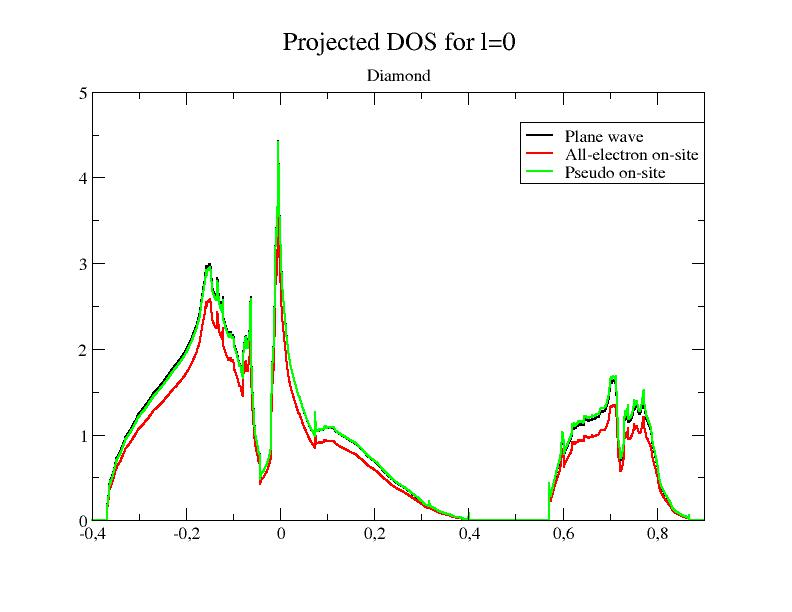
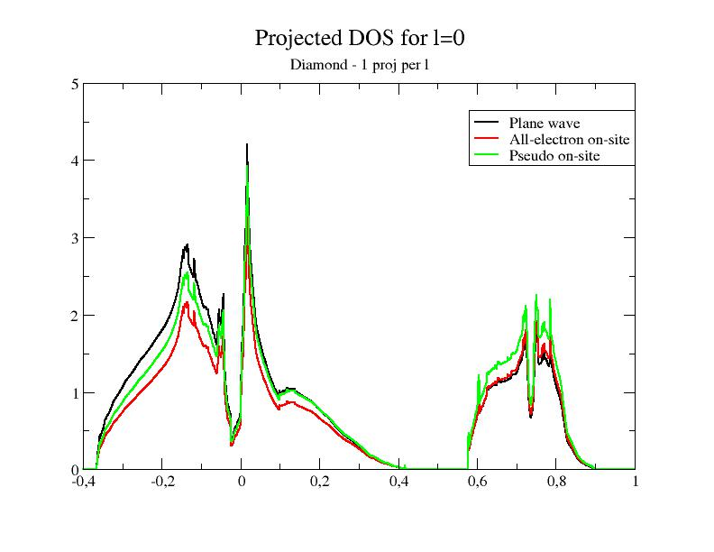
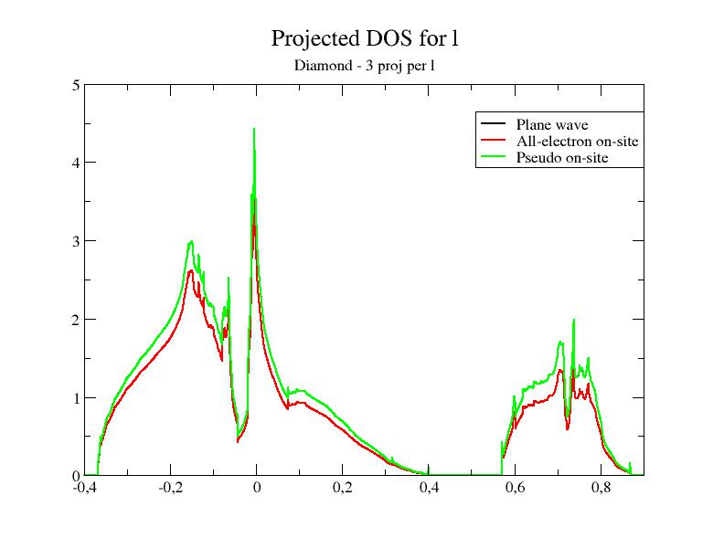
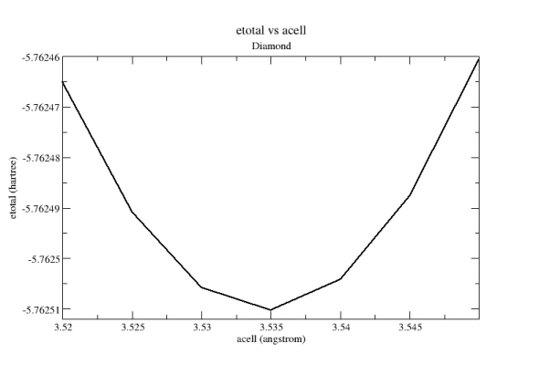

First lesson on the projector-augmented wave (PAW) technique¶
Projector Augmented-Wave technique, how to use it?¶
This lesson aims at showing how to perform a calculation in the frame of the PAW method.
You will learn how to launch a PAW calculation and what are the main input variables that govern convergence and numerical efficiency. It is supposed that you already know how to use ABINIT in the norm-conserving pseudopotential case.
This lesson should take about 1.5 hour.
1 Summary of the PAW method¶
The PAW (Projector Augmented-Wave) method has been introduced by Peter Blochl in 1994. As he says:
The projector augmented-wave method is an extension of augmented wave methods and the pseudopotential approach, which combines their traditions into a unified electronic structure method”.
It is based on a linear and invertible transformation (the PAW transformation) that connects the “true” wavefunctions with “auxiliary” (or “pseudo”) soft wavefunctions :
This relation is based on the definition of atomic spheres (augmentation regions) of radius , around the atoms of the system in which the partial waves form a basis of atomic wavefunctions; are “pseudized” partial waves (obtained from ), and are dual functions of the called projectors. It is therefore possible to write every quantity depending on (density, energy, Hamiltonian) as a function of and to find by solving self-consistent equations.
The PAW method has two main advantages:
- From , it is always possible to obtain the true “all electron” wavefunction .
- The convergency is comparable to an ultrasoft pseudopotential one.
From a practical point of view (user’s point of view), a PAW calculation is rather similar to a norm-conserving pseudopotential one. Most noticeably, one will have to use a special atomic data file (PAW dataset) that contains the , and and that plays the same role as a pseudopotential file.
Tip
It is highly recommended to read the following papers to understand correctly the basic concepts of the PAW method: [Bloechl1994] and [Kresse1999]. The implementation of the PAW method in ABINIT is detailed in [Torrent2008], describing specific notations and formulations
2 Using PAW with ABINIT¶
Before continuing, you might consider to work in a different subdirectory as for the other lessons. Why not “Work_paw1”? In what follows, the name of files are mentioned as if you were in this subdirectory. All the input files can be found in the ~abinit/tests/tutorial/Input directory.
Important
You can compare your results with reference output files located in
~abinit/tests/tutorial/Refs and ~abinit/tests/tutorial/Refs/tpaw1_addons
directories (for the present tutorial they are named tpaw1_*.out).
The input file tpaw1_1.in is an example of a file that contains data for
computing the total energy for diamond at the experimental volume (within the
LDA exchange-correlation functional). You might use the file tpaw1_1.files
(with a standard norm-conserving pseudopotential) as a “files” file, and get
the corresponding output file (it is available in ../Refs/tpaw1_1.out).
Copy the files tpaw1_1.in and tpaw1_1.files in your work directory, and run ABINIT:
abinit < tpaw1_1.files > tmp-log
In the meantime, you can read the input file and see that there is no PAW input variable.
ABINIT should run very quickly…
tpaw1_1.in tpaw1_1.out tpaw1_1i tpaw1_1o tpaw1_1tmp ../../../Psps_for_tests/6c.pspnc #PAW: Replace the last line by the following ../../../Psps_for_tests/6c.lda.atompaw
# ======================================= # Input for PAW1 tutorial # Diamond at experimental volume # ======================================= #Cell and atoms definition acell 3*3.567 angstrom rprim 0.0 1/2 1/2 1/2 0.0 1/2 1/2 1/2 0.0 ntypat 1 natom 2 typat 2*1 xred 0.0 0.0 0.0 1/4 1/4 1/4 znucl 6 nband 6 #Grid definitions ecut 15. ecutsm 0.5 #SCF cycle parameters tolvrs 1.0d-10 nstep 20 #K-points and sym nsym 0 occopt 1 ngkpt 6 6 6 nshiftk 4 shiftk 0.5 0.5 0.5 0.5 0.0 0.0 0.0 0.5 0.0 0.0 0.0 0.5 #I/O parameters prtwf 0 prtden 0 prteig 0 ## After modifying the following section, one might need to regenerate the pickle database with runtests.py -r #%%<BEGIN TEST_INFO> #%% [setup] #%% executable = abinit #%% [files] #%% files_to_test = #%% tpaw1_1.out, tolnlines= 0, tolabs= 0.000e+00, tolrel= 0.000e+00 #%% psp_files = 6c.pspnc #%% [paral_info] #%% max_nprocs = 4 #%% [extra_info] #%% authors = M. Torrent #%% keywords = PAW #%% description = #%% Input for PAW1 tutorial #%% Diamond at experimental volume #%%<END TEST_INFO>
Now, open the tpaw1_1.files and modify the last line; replace the 6c.pspnc file by 6c.lda.atompaw. Run ABINIT again:
abinit < tpaw1_1.files > tmp-log
Your run should stop almost immediately! The input file is missing the mandatory argument pawecutdg!!
Add the line:
pawecutdg 50
to tpaw1_1.in file and run ABINIT again. Now the code runs to the end.
Note
The time needed for the PAW run is greater than the time needed for the norm-conserving pseudopotential run; indeed, at constant value of plane wave cut-off energy ecut PAW requires more computational resources:
- the “on-site” contributions have to be computed,
- the nonlocal contribution of the PAW dataset uses 2 projectors per angular momentum, while the nonlocal contribution of the present norm-conserving pseudopotential uses only one.
However, as the plane wave cut-off energy required by PAW is much smaller than the cut-off needed for the norm-conserving pseudopotential (see next section), a PAW calculation will actually require less CPU time.
Let’s open the output file and have a look inside (be careful, it is the last output file of the tpaw1_1 series). Compared to an output file for a norm-conserving pseudopotential run, an output file for PAW contains the following specific topics:
At the beginning of the file, some specific default PAW input variables (ngfftdg, pawecutdg, and useylm) are mentioned in the section:
-outvars: echo values of preprocessed input variables --------
The use of two FFT grids, mentioned in:
Coarse grid specifications (used for wave-functions):
getcut: wavevector= 0.0000 0.0000 0.0000 ngfft= 18 18 18
ecut(hartree)= 15.000 => boxcut(ratio)= 2.17276
Fine grid specifications (used for densities):
getcut: wavevector= 0.0000 0.0000 0.0000 ngfft= 32 32 32
ecut(hartree)= 50.000 => boxcut(ratio)= 2.10918
A specific description of the PAW dataset (you might follow the tutorial PAW2, devoted to the building of the PAW atomic data, for a complete understanding of the file):
Pseudopotential format is: paw4 basis_size (lnmax)= 4 (lmn_size= 8), orbitals= 0 0 1 1 Spheres core radius: rc_sph= 1.50000000 4 radial meshes are used: - mesh 1: r(i)=AA*[exp(BB*(i-1))-1], size= 505 , AA= 0.21824E-02 BB=0.13095E-01 - mesh 2: r(i)=AA*[exp(BB*(i-1))-1], size= 500 , AA= 0.21824E-02 BB=0.13095E-01 - mesh 3: r(i)=AA*[exp(BB*(i-1))-1], size= 530 , AA= 0.21824E-02 BB=0.13095E-01 - mesh 4: r(i)=AA*[exp(BB*(i-1))-1], size= 644 , AA= 0.21824E-02 BB=0.13095E-01 Shapefunction is SIN type: shapef(r)=[sin(pi*r/rshp)/(pi*r/rshp)]**2 Radius for shape functions = sphere core radius Radial grid used for partial waves is grid 1 Radial grid used for projectors is grid 2 Radial grid used for (t)core density is grid 3 Radial grid used for Vloc is grid 4 Radial grid used for pseudo valence density is grid 4
After the SCF cycle section:
The value of the integrated compensation charge evaluated by two different numerical methodologies (remember: PAW atomic dataset are not norm-conserving pseudopotentials); it is given calculated in the augmentation regions (PAW spheres) on the “spherical” grid and also in the whole simulation cell on the “FFT” grid. A discussion on these two values will be done in a forthcoming section.
PAW TEST: ==== Compensation charge inside spheres ============ The following values must be close to each other ... Compensation charge over spherical meshes = 0.413178580356274 Compensation charge over fine fft grid = 0.413177280314290
Information concerning the non-local term (pseudopotential strength ) and the spherical density matrix (augmentation wave occupancies ):
==== Results concerning PAW augmentation regions ==== Total pseudopotential strength Dij (hartree): Atom # 1 ... Atom # 2 ... ugmentation waves occupancies Rhoij: Atom # 1 ... Atom # 2 ...
At the end of the file we find the decomposition of the total energy both by direct calculation and double counting calculation:
--------------------------------------------------------------------------------
Components of total free energy (in Hartree) :
Kinetic energy = 6.40164318808980E+00
Hartree energy = 9.63456708252837E-01
XC energy = -3.53223656186138E+00
Ewald energy = -1.27864121210521E+01
PspCore energy = 5.41017918797015E-01
Loc. psp. energy= -5.27003595856857E+00
Spherical terms = 2.15689044331394E+00
>>>>> Internal E= -1.15256763830284E+01
"Double-counting" decomposition of free energy:
Band energy = 6.87331579398577E-01
Ewald energy = -1.27864121210521E+01
PspCore energy = 5.41017918797015E-01
Dble-C XC-energy= 1.22161340385476E-01
Spherical terms = -8.97688814082645E-02
>>>>> Internal E= -1.15256701638793E+01
>Total energy in eV = -3.13629604304723E+02
>Total DC energy in eV = -3.13629435073068E+02
Note that the total energy calculated in PAW is not the same as the one obtained in the norm-conserving pseudopotential case. This is normal: in the norm-conserving potential case, the energy reference has been arbitrarily modified by the pseudopotential construction procedure. Comparing total energies computed with different PAW potentials is more meaningful: most of the parts of the energy are calculated exactly, and in general you should be able to compare numbers for (valence) energies between different PAW potentials or different codes.
3 The convergence on plane-wave cut-off¶
As in the usual case, the critical convergence parameter is the cut-off defining the size of the plane-wave basis…
3.a Computing the convergence in ecut for diamond in the norm-conserving case
The input file tpaw1_2.in contains data for computing the convergence in ecut for diamond (at experimental volume). There are 9 datasets, for which ecut increases from 8 Ha to 24 Ha by step of 2 Ha. You might use the tpaw1_2.files file (with a standard norm-conserving pseudopotential), and run ABINIT:
abinit < tpaw1_2.files > tmp-log
You should obtain the values (output file tpaw1_2.out):
etotal1 -1.1628880677E+01 etotal2 -1.1828052470E+01 etotal3 -1.1921833945E+01 etotal4 -1.1976374633E+01 etotal5 -1.2017601960E+01 etotal6 -1.2046855404E+01 etotal7 -1.2062173253E+01 etotal8 -1.2069642342E+01 etotal9 -1.2073328672E+01
You can check that the etotal convergence (at the 1 mHartree level) is not achieved for ecut = 24 Hartree.
3.b Computing the convergence in ecut for diamond in the PAW case
Use the same input files as in section 1.a. Again, modify the last line of tpaw1_2.files, replacing the 6c.pspnc file by 6c.lda.atompaw. Run ABINIT again and open the output file (it should be tpaw1_2.outA) You should obtain the values:
etotal1 -1.1474828697E+01 etotal2 -1.1518675625E+01 etotal3 -1.1524581240E+01 etotal4 -1.1525548758E+01 etotal5 -1.1525741818E+01 etotal6 -1.1525865084E+01 etotal7 -1.1525926864E+01 etotal8 -1.1525947400E+01 etotal9 -1.1525954817E+01
You can check that:
- The etotal convergence (at 1 mHartree) is achieved for 12<=ecut<=14 Hartree (etotal4 is within 1 mHartree of the final value);
- The etotal convergence (at 0.1 mHartree) is achieved for 16<=ecut<=18 Hartree (etotal6 is within 0.1 mHartree of the final value).
So with the same input, a PAW calculation for diamond needs a lower cutoff, compared to a norm-conserving pseudopotential calculation.
4 The convergence on the double grid FFT cut-off¶
In a norm-conserving calculation, the (plane wave) density
grid is (at least) twice bigger than the wavefunctions grid, in each
direction. In a PAW calculation, the (plane wave) density grid is tunable
thanks to the input variable pawecutdg (PAW: ECUT for Double Grid). This
is needed because of the mapping of objects (densities, potentials) located
in the augmentation regions (PAW spheres) onto the global FFT grid.
The number of points of the Fourier grid located in the spheres must be high
enough to preserve the accuracy. It is determined from the cut-off energy
pawecutdg. An alternative is to use directly the input variable
ngfftdg. One of the most sensitive objects affected by this “grid
transfer” is the compensation charge density; its integral over the
augmentation regions (on spherical grids) must cancel with its integral over
the whole simulation cell (on the FFT grid).
Use now the input file tpaw1_3.in and the associated tpaw1_3.files file.
The only difference with the tpaw1_2.in file is that ecut is fixed to 12
Ha, while pawecutdg runs from 12 to 39 Ha.
tpaw1_3.in tpaw1_3.out tpaw1_3i tpaw1_3o tpaw1_3tmp ../../../Psps_for_tests/6c.lda.atompaw
# ======================================= # Input for PAW1 tutorial # Diamond at experimental volume # ======================================= #Datasets: convergence on pawecutdg ndtset 10 pawecutdg: 12. pawecutdg+ 3. #Cell and atoms definition acell 3*3.567 angstrom rprim 0.0 1/2 1/2 1/2 0.0 1/2 1/2 1/2 0.0 ntypat 1 natom 2 typat 2*1 xred 0.0 0.0 0.0 1/4 1/4 1/4 znucl 6 nband 6 #Basis definitions ecut 12. ecutsm 0.5 #SCF cycle parameters tolvrs 1.0d-10 nstep 20 #K-points and sym nsym 0 occopt 1 ngkpt 6 6 6 nshiftk 4 shiftk 0.5 0.5 0.5 0.5 0.0 0.0 0.0 0.5 0.0 0.0 0.0 0.5 #I/O parameters prtwf 1 prtden 0 prteig 0 getwfk -1 ## After modifying the following section, one might need to regenerate the pickle database with runtests.py -r #%%<BEGIN TEST_INFO> #%% [setup] #%% executable = abinit #%% [files] #%% files_to_test = #%% tpaw1_3.out, tolnlines= 0, tolabs= 0.000e+00, tolrel= 0.000e+00, fld_options=-easy #%% psp_files = 6c.lda.atompaw #%% [paral_info] #%% max_nprocs = 4 #%% [extra_info] #%% authors = M. Torrent #%% keywords = PAW #%% description = #%% Input for PAW1 tutorial #%% Diamond at experimental volume #%%<END TEST_INFO>
Launch ABINIT with these files; you should obtain the values (file tpaw1_3.out):
etotal1 -1.1524629595E+01 etotal2 -1.1524595840E+01 etotal3 -1.1524585370E+01 etotal4 -1.1524580630E+01 etotal5 -1.1524584720E+01 etotal6 -1.1524583573E+01 etotal7 -1.1524582786E+01 etotal8 -1.1524582633E+01 etotal9 -1.1524582213E+01 etotal10 -1.1524582316E+01
We see that the variation of the energy wit respect to this parameter is well below the 1 mHa level. In principle, it should be sufficient to choose pawecutdg=12 Ha in order to obtain an energy change lower than 1 mHa. In practice, it is better to keep a security margin. Here, for pawecutdg=24 Ha (5th dataset), the energy change is lower than 0.001 mHa``: this choice will be more than enough.
Note
Note the steps in the convergence. They are due to the sudden (integer) changes in the grid size (see the output values for ngfftdg) which do not occur for each increase of pawecutdg. To avoid troubles due to these steps, it is better to choose a value of pawecutdg slightly higher.
The convergence of the compensation charge has a similar behaviour; it is possible to check it in the output file, just after the SCF cycle by looking at:
PAW TEST: ==== Compensation charge inside spheres ============ The following values must be close... Compensation charge over spherical meshes = 0.409392121335747 Compensation charge over fine fft grid = 0.409392418241149
The two values of the integrated compensation charge density must be close to each other. Note that, for numerical reasons, they cannot be exactly the same (integration over a radial grid does not use the same scheme as integration over a FFT grid).
Additional test:
We want now to check the convergence in ecut with a fixed value of 24 Ha
for pawecutdg. Modify the file tpaw1_2.in, setting pawecutdg to 24 Ha, and launch ABINIT again…
You should obtain the values:
etotal1 -1.1474831477E+01 etotal2 -1.1518678975E+01 etotal3 -1.1524584720E+01 etotal4 -1.1525552267E+01 etotal5 -1.1525745330E+01 etotal6 -1.1525868591E+01 etotal7 -1.1525930368E+01 etotal8 -1.1525950904E+01 etotal9 -1.1525958319E+01
You can check again that:
- The etotal convergence (at the 1 mHartree level) is achieved for 12<=ecut<=14 Hartree;
- The etotal convergence (at the 0.1 mHartree level) is achieved for 16<=ecut<=18 Hartree.
- Note 1
- Associated with the input variable pawecutdg is the input variable ngfftdg: it gives the size of the FFT grid associated with pawecutdg. Note that pawecutdg is only useful to define the FFT grid for the density in a convenient way. You can therefore tune directly ngfftdg to define the size of the FFT grid for the density.
- Note 2
- Although pawecutdg should always be checked, in practice, a common use it to put it bigger than ecut and keep it constant during all calculations. Increasing pawecutdg slightly changes the CPU execution time, but above all it is memory-consuming. Note that, if ecut is already high, there is no need for a high pawecutdg.
Important
When testing ecut convergency, pawecutdg has to remain constant to obtain consistent results.
5 Plotting PAW contributions to the Density of States (DOS)¶
We now use the input file tpaw1_4.in and the associated tpaw1_4.files file. ABINIT is now asked to compute the Density Of State (DOS) (see the prtdos keyword in the input file). Also note that more k-points are used in order to increase the accuracy of the DOS. ecut is set to 12 Ha, while pawecutdg is 24 Ha.
# ======================================= # Input for PAW1 tutorial # Diamond at experimental volume # ======================================= #Output of the total DOS prtdos 1 #Output of the projected DOS (with PAW contribs) # prtdos 3 pawprtdos 1 # natsph 1 iatsph 1 ratsph 1.5 #Cell and atoms definition acell 3*3.567 angstrom rprim 0.0 1/2 1/2 1/2 0.0 1/2 1/2 1/2 0.0 ntypat 1 natom 2 typat 2*1 xred 0.0 0.0 0.0 1/4 1/4 1/4 znucl 6 nband 6 #Basis definitions ecut 12. ecutsm 0.5 pawecutdg 24. #SCF cycle parameters tolwfr 1.0d-12 nbdbuf 2 #nbdbuf:does not take care of empty bands nstep 10 #K-points and sym nsym 0 occopt 7 tsmear 0.005 ngkpt 10 10 10 nshiftk 4 shiftk 0.5 0.5 0.5 0.5 0.0 0.0 0.0 0.5 0.0 0.0 0.0 0.5 #I/O parameters prtwf 0 prtden 0 prteig 0 ## After modifying the following section, one might need to regenerate the pickle database with runtests.py -r #%%<BEGIN TEST_INFO> #%% [setup] #%% executable = abinit #%% [files] #%% files_to_test = #%% tpaw1_4.out, tolnlines= 0, tolabs= 0.000e+00, tolrel= 0.000e+00, fld_options = -easy #%% psp_files = 6c.lda.atompaw #%% [paral_info] #%% max_nprocs = 4 #%% [extra_info] #%% authors = M. Torrent #%% keywords = PAW #%% description = #%% Input for PAW1 tutorial #%% Diamond at experimental volume #%%<END TEST_INFO>
Launch ABINIT with these files; you should obtain the tpaw1_4.out and the DOS file (tpaw1_4o_DOS):
abinit < tpaw1_4.files > tmp-log
You can plot the DOS file if you want; for this purpose, use a graphical tool and plot column 3 with respect to column 2. If you use the “xmgrace” tool, launch:
xmgrace -block tpaw1_4o_DOS -bxy 1:2
At this stage, you have the usual plot for a DOS; nothing specific to PAW.
Now, edit the tpaw1_4.in file, comment the “prtdos 1”, and uncomment (or add):
prtdos 3 pawprtdos 1 natsph 1 iatsph 1 ratsph 1.5
The ” prtdos 3” statement now requires the output of the projected DOS; “natsph 1 iatsph 1 ratsph 1.5” selects the first carbon atom as the center of projection, and sets the radius of the projection area to 1.5 atomic units (this is exactly the radius of the PAW augmentation regions: generally the best choice). The “pawprtdos 1” is specific to PAW. With this option, ABINIT is asked to compute all the contributions to the projected DOS.
Let’s remember that:
Within PAW, the total projected DOS has 3 contributions:
- the smooth plane-waves contribution (from )
- the all-electron on-site contribution (from
- the pseudo on-site contribution (from
Launch ABINIT again (with the modified input file). You get a new DOS file, named tpaw1_4o_DOS_AT0001. You can edit it and look inside; it contains the 3 PAW contributions (mentioned above) for each angular momentum. In the diamond case, only l=0 and l=1 momenta are treated.
Now, plot the file, using the 7th, 12th and 17th columns with respect to the 2nd one; it plots the 3 PAW contributions for l=0 (the total DOS is the sum of the three contributions). If you use the “xmgrace” tool, launch:
xmgrace -block tpaw1_4o_DOS_AT0001 -bxy 1:7 -bxy 1:12 -bxy 1:17
You should get this:

As you can see, the smooth PW contribution and the PS on-site contribution are close. So, in a first approach, they cancel; we could approximate the DOS by the AE on-site part taken alone. That is exactly what is done when pawprtdos=2; in that case, only the AE on-site contribution is computed and given as a good approximation of the total projected DOS. The main advantage of this option is the decrease of the CPU time needed to compute the DOS (it is instantaneously computed).
But, as you will see in the next section, this approximation is only valid when:
- the basis is complete enough
- the electronic density is mainly contained in the sphere defined by ratsph.
6 Testing the completeness of the PAW partial wave basis¶
Note that, in the previous section, we used a “standard” PAW dataset, with 2 partial waves per angular momentum. It is generally the best compromise between the completeness of the partial wave basis and the efficiency of the PAW dataset (the more partial waves you have, the longer the CPU time used by ABINIT is).
Let’s have a look at the ~abinit/tests/Psps_for_tests/6c.lda.atompaw file. The sixth line indicates the number of partial waves and their l angular momentum. In the present file, “0 0 1 1” means “two l=0 partial waves, two l=1 partial waves”.
Now, let’s open the ~abinit/tests/Psps_for_tests/6c.lda.test-2proj.atompaw and ~abinit/tests/Psps_for_tests/6c.lda.test-6proj.atompaw files. In the first file, only one partial wave per l is present; in the second one, 3 partial waves per l are present. In other words, the completeness of the partial wave basis increases when you use 6c.lda.test-2proj.atompaw, 6c.lda.atompaw and 6c.lda.test-6proj.atompaw.
Now, let’s plot the DOS for the two new PAW datasets.
- First, save the existing tpaw1_4o_DOS_AT0001 file, naming it, for instance, tpaw1_4o_4proj_DOS_AT0001.
- Open the tpaw1_4.files file and modify it in order to use the 6c.lda.test-2proj.atompaw PAW dataset.
- Launch ABINIT again.
- Save the new tpaw1_4o_DOS_AT0001 file, naming it, for instance, tpaw1_4o_2proj_DOS_AT0001.
- Open the tpaw1_4.files file and modify it in order to use the 6c.lda.test-6proj.atompaw PAW dataset.
- Launch ABINIT again.
- Save the new tpaw1_4o_DOS_AT0001 file, naming it, for instance, tpaw1_4o_6proj_DOS_AT0001.
Then, plot the contributions to the projected DOS for the two new DOS files. You should get:


Adding the DOS obtained in the previous section to the comparison, you immediately see that the superposition of the Smooth part DOS and the PS on-site DOS depends on the completeness of the partial wave basis!
Now, you can have a look at the 3 output files (one for each PAW dataset)… for instance in a comparison tool. A way to estimate the completeness of the partial wave basis is to compare derivatives of total energy; if you look at the stress stensor:
For the 2 partial-wave bases: -1.0866668849E-03 -1.0866668849E-03 -1.0866668849E-03 0. 0. 0. For the 4 partial-wave basis: 4.1504385879E-04 4.1504385879E-04 4.1504385879E-04 0. 0. 0. For the 6 partial-wave basis: 4.1469803037E-04 4.1469803037E-04 4.1469803037E-04 0. 0. 0.
The 2 partial-wave basis is clearly not complete; the 4 partial-wave basis results are correct… Such a test is useful to estimate the precision we can expect on the stress tensor (at least due to the partial wave basis).
You can compare other results in the 3 output files: total energy, eigenvalues, occupations… Also notice that the dimensions of the PAW on-site quantities change: have a look at “Pseudopotential strength Dij” or “Augmentation waves occupancies Rhoij” sections…
Note: if you want to learn how to generate PAW datasets with different partial wave bases, you might follow the tutorial PAW2.
7 Checking the validity of PAW results¶
As usual, the validity of a “pseudopotential” (PAW dataset) has to be checked by comparison, on known structures, with known results. In the case of diamond, lots of computations and experimental results exist. Very important remark: the validity (completeness of plane wave basis and partial wave basis) of PAW calculations should always be checked by comparison with all-electrons computation results (or with other existing PAW results); it should not be done by comparison with experimental results. As the PAW method has the same accuracy than all-electron methods, results should be very close.
Concerning diamond, all-electron results can be found (for instance) in PRB 55, 2005 (1997). With the famous WIEN2K code (which uses the FP-LAPW method), all-electron equilibrium parameters for diamond (for LDA) are:
a0 = 3.54 angstrom B = 470 GPa
Experiments give:
a0 = 3.56 angstrom B = 443 GPa
Let’s test with ABINIT. We use now the input file tpaw1_5.in and the associated tpaw1_5.files file. ABINIT is now asked to compute values of etotal for several cell parameters around 3.54 angstrom, using the standard PAW dataset.
# ======================================= # Input for PAW1 tutorial # Diamond: etotal vs acell curve around equilibrium # ======================================= #Datasets: etotal vs acell ndtset 7 acell: 3*3.52 angstrom acell+ 3*0.005 angstrom #Cell and atoms definition acell 3*3.567 angstrom rprim 0.0 1/2 1/2 1/2 0.0 1/2 1/2 1/2 0.0 ntypat 1 natom 2 typat 2*1 xred 0.0 0.0 0.0 1/4 1/4 1/4 znucl 6 nband 6 #Basis definitions ecut 12. ecutsm 0.5 pawecutdg 24. #SCF cycle parameters tolvrs 1.0d-10 nstep 10 #K-points and sym nsym 0 occopt 1 ngkpt 10 10 10 nshiftk 4 shiftk 0.5 0.5 0.5 0.5 0.0 0.0 0.0 0.5 0.0 0.0 0.0 0.5 #I/O parameters prtwf 1 prtden 0 prteig 0 getwfk -1 ## After modifying the following section, one might need to regenerate the pickle database with runtests.py -r #%%<BEGIN TEST_INFO> #%% [setup] #%% executable = abinit #%% [files] #%% files_to_test = #%% tpaw1_5.out, tolnlines= 0, tolabs= 0.000e+00, tolrel= 0.000e+00, fld_options = -easy #%% psp_files = 6c.lda.atompaw #%% [paral_info] #%% max_nprocs = 4 #%% [extra_info] #%% authors = M. Torrent #%% keywords = PAW #%% description = #%% Input for PAW1 tutorial #%% Diamond: etotal vs acell curve around equilibrium #%%<END TEST_INFO>
Launch ABINIT with these files; you should obtain the tpaw1_5.out.
abinit < tpaw1_5.files > tmp-log
From the tpaw1_5.out file, you can extract the 7 values of acell and 7 values of etotal, then put them into a file and plot it with a graphical tool. You should get:

From this curve, you can extract the cell values of a0 and B (with the method of your choice, for example by a Birch-Murnhagan spline fit). You get:
a0 = 3.535 angstrom B = 465 GPa
These results are in excellent agreement with FP-LAPW ones!
8 Additional comments about PAW in ABINIT¶
Mixing scheme for the Self-Consistent cycle; decomposition of the total energy¶
The use of an efficient mixing scheme in the self-consistent loop is a crucial point to minimize the number of steps to achieve convergence. This mixing can be done on the potential or on the valence density. By default, in a norm-conserving pseudopotential calculation, the mixing is done on the potential; but, for technical reasons, this choice is not optimal for PAW calculations. Thus, by default, the mixing is done on the density when PAW is activated. The mixing scheme can be controlled by the iscf variable (please, read
again the different options of this input variable). By default, iscf=7 for norm-conserving pseudopotentials, while iscf= 17 for PAW… To compare both schemes, you can edit the tpaw1_1.in file and try iscf=7 or 17 and compare the behaviour of the SC cycle in both cases; as you can see, final total energy is the same but the way to reach it is completely different.
Now, have a look at the end of the file and focus on the “Components of total free energy”; the total energy is decomposed according to both schemes; at very high convergence of the SCF cycle (very small potential or density residual), these two values should be the same. But it has been observed that the converged value was reached more rapidly by the direct energy, when the mixing is on the potential, and by the double counting energy when the mixing is on the density. Thus, by default, in the output file is to print the direct energy when the mixing is on the potential, and the double counting energy when the mixing is on the density.
You can try (using the tpaw1_1.in file) to decrease the values of tolvrs and look at the difference between both values of energy.
Also note that PAW ρij quantities (occupancies of partial waves) also are mixed during the SC cycle; by default, the mixing is done in the same way as the density.
Overlap of PAW spheres¶
In principle, the PAW formalism is only valid for non-overlapping augmentation regions (PAW spheres). But, in usual cases, a small overlap between spheres is acceptable. By default, ABINIT checks that the distances between atoms are large enough to avoid overlap; a “small” voluminal overlap of 5% is accepted by default. This value can be tuned with the pawovlp input keyword. The overlap check can even be by-passed with pawovlp=-1.
Important warning: while a small overlap can be acceptable for the augmentation regions, an overlap of the compensation charge densities has to be avoided. The compensation charge density is defined by a radius (named rshape in the PAW dataset file) and an analytical shape function. The overlap related to the compensation charge radius is checked by ABINIT and a WARNING is eventually printed…
Also note that you can control the compensation charge radius and shape function while generating the PAW dataset (see tutorial PAW2).
Printing volume for PAW¶
If you want to get more detailed output concerning the PAW computation, you can use the pawprtvol input keyword. See its description in the user’s manual… It is particularly useful to print details about pseudopotential strength () or partial waves occupancies ().
Additional PAW input variables¶
Looking at the basic varset file, you can find input ABINIT keywords specific to PAW. They are to be used when tuning the computation, in order to gain accuracy or save CPU time.
Warning
In a standard computation, these variables should not be modified!
Variables that can be used to gain accuracy (in ascending order of importance):
- pawxcdev
- control the accuracy of exchange-correlation on-site potentials (try pawxcdev=2 to increase accuracy).
- mqgriddg
- control the accuracy of spline fits to transfer densities/potentials from FFT grid to spherical grid.
- pawnzlm
- control the computation of moments of spherical densities that should be zero by symmetry.
Variables that can be used to save memory (in ascending order of importance):
- pawstgylm
- control the storage of spherical harmonics computed around atoms.
- pawmixdg
- control on which grid the potential/density is mixed during SCF cycles.
- pawlcutd
- control the number of angular momenta to take into account in on-site densities.
- pawlmix
- control the number of to be mixed during SCF cycle.
Variables that can be used to save CPU time (in ascending order of importance):
- pawnhatxc
- control the numerical treatment of gradients of compensation charge density in case of GGA
- pawstgylm
- control the storage of spherical harmonics computed around atoms.
- pawlcutd
- control the number of angular momenta to take into account in on-site densities.
- pawlmix
- control the number of ρij to be mixed during SCF cycle.
- bxctmindg
- can be used to decrease the size of fine FFT grid for a given value of pawecutdg.
The above list is not exhaustive. Several other keywords can be used to tune ABINIT PAW calculations.
PAW+U¶
If the system under study contains strongly correlated electrons, the LDA+U method can be useful. It is controlled by the usepawu, lpawu, upawu and jpawu input keywords. Note that the formalism implemented in ABINIT is approximate, i.e. it is only valid if:
- the basis is complete enough;
- the electronic density is mainly contained in the PAW sphere.
The approximation done here is the same as the one explained in the 5th section of this tutorial: considering that smooth PW contributions and PS on-site contributions are closely related, only the AE on-site contribution is computed; it is indeed a very good approximation.
Converging a Self-Consistent Cycle, or ensuring the global minimum is reached, with PAW+U is sometimes difficult. Using usedmatpu and dmatpawu can help…